a collection of things.
Archive
The wider body of work—finished projects and studies across design, motion, painting, illustration, and writing.
Design & motion
Title sequences, interfaces, posters and illustration systems.
-
01
 Midnight MassTitle sequence
Motion designCase study
Midnight MassTitle sequence
Motion designCase study
-
02
 DeerfallShort film identity · Ongoing
Brand identityCase study
DeerfallShort film identity · Ongoing
Brand identityCase study
-
03
 Playa Bowls KioskSelf-service kiosk
UX/UI designCase study
Playa Bowls KioskSelf-service kiosk
UX/UI designCase study
-
04
 PooPrintSpeculative interface
Interaction designCase study
PooPrintSpeculative interface
Interaction designCase study
-
05
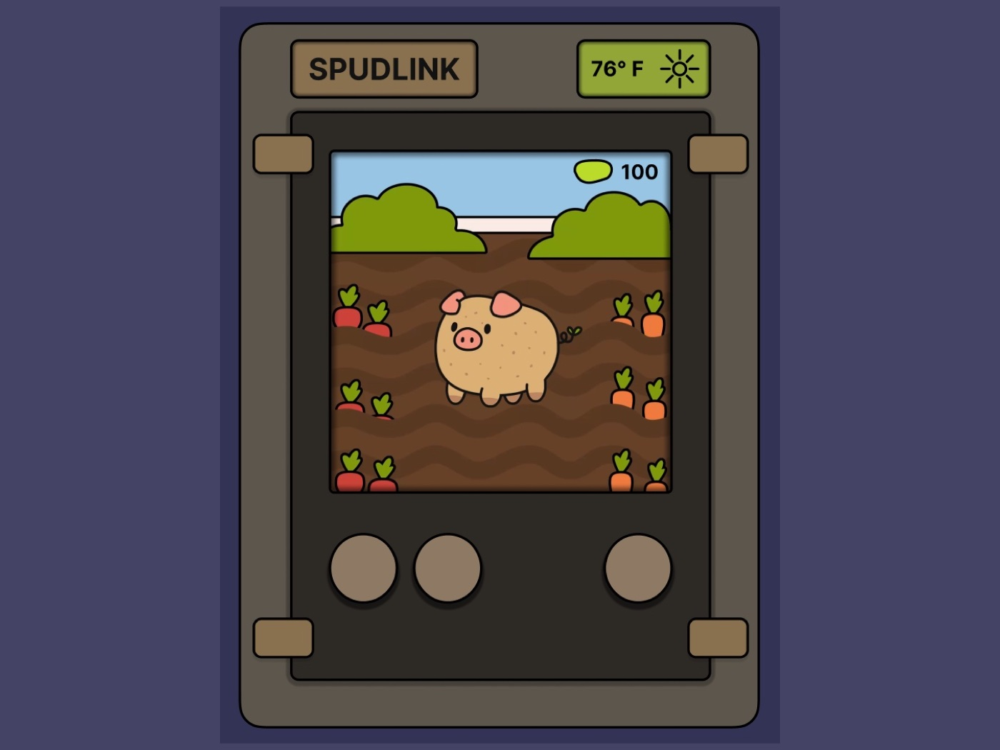
SpudTamagotchi prototype Interaction designCase study -
06
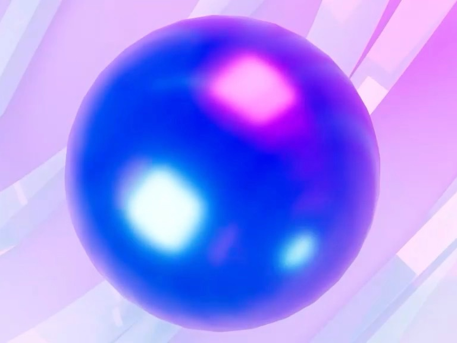
Cinema 4D IdentBrand ident · 3D Motion designCase study
Art
Paintings, portraits, illustration and sculpture.
-
07
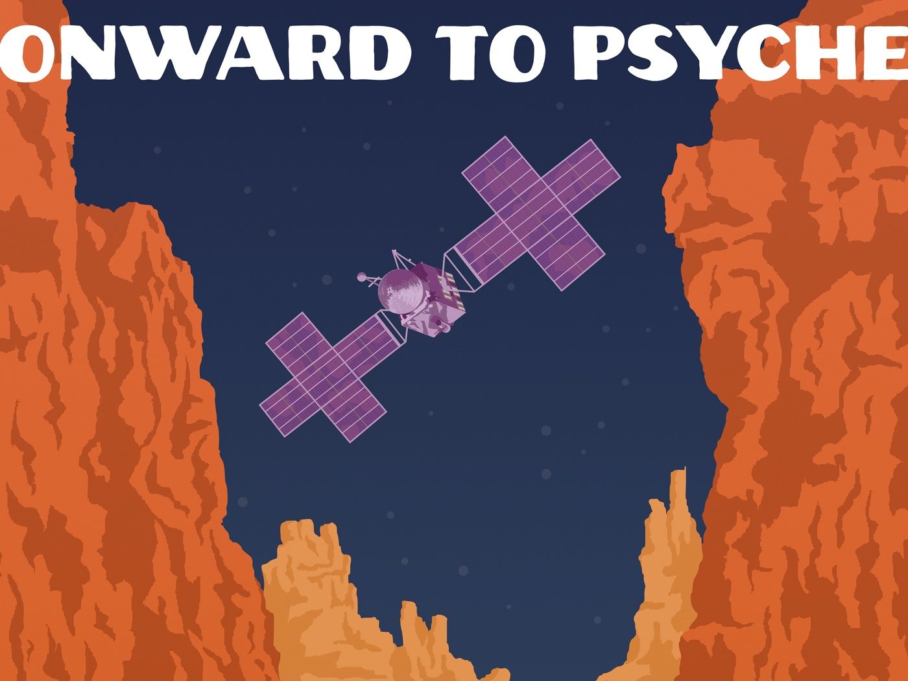
Onward to PsycheDigital · NASA Psyche Inspired IllustrationCase study -
08
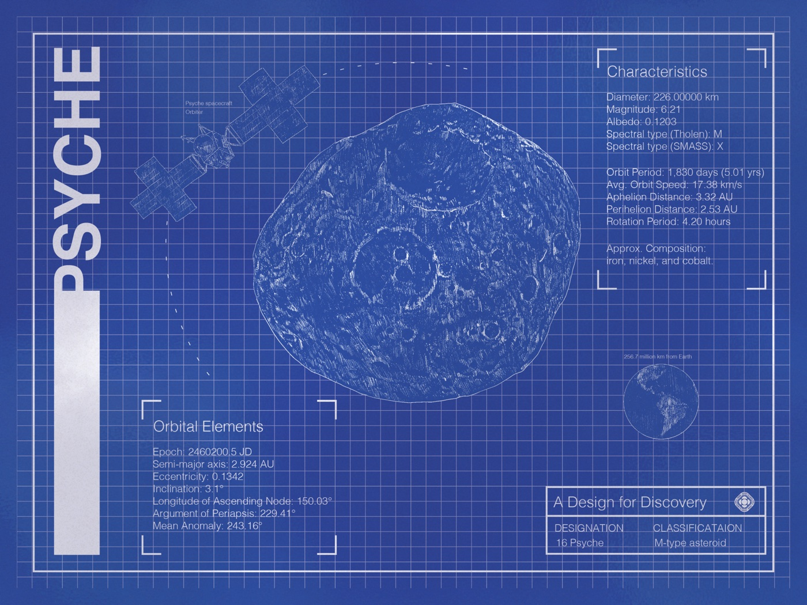
A Design for DiscoveryDigital · NASA Psyche Inspired IllustrationCase study -
09
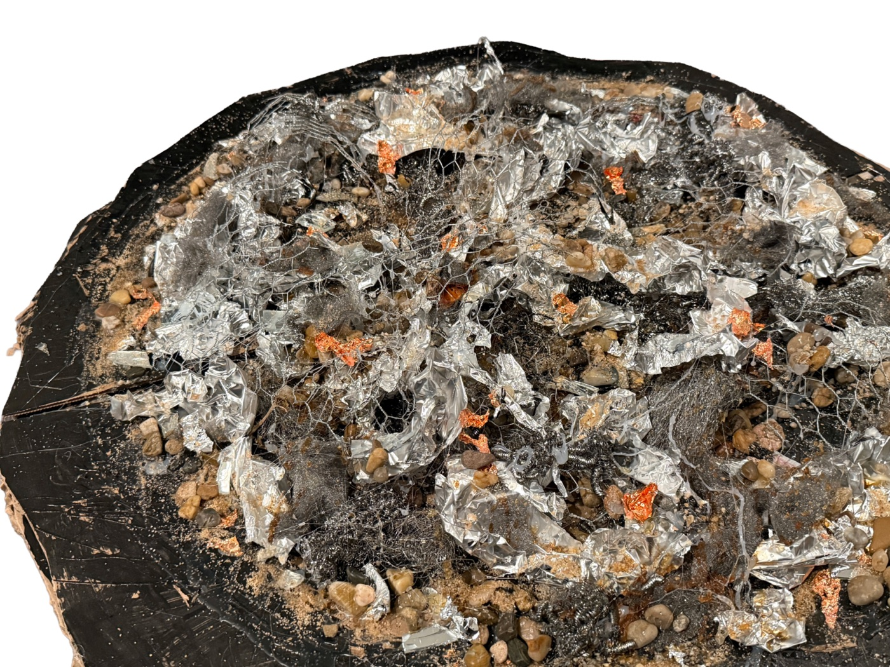
Specimen (16 Psyche)Mixed media · NASA Psyche Inspired SculptureCase study -
10
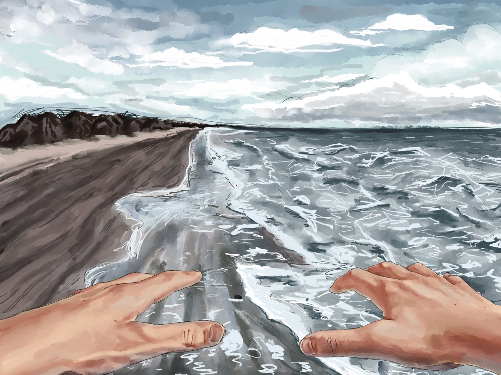
AvatarDigital · Triptych PaintingCase study -
11
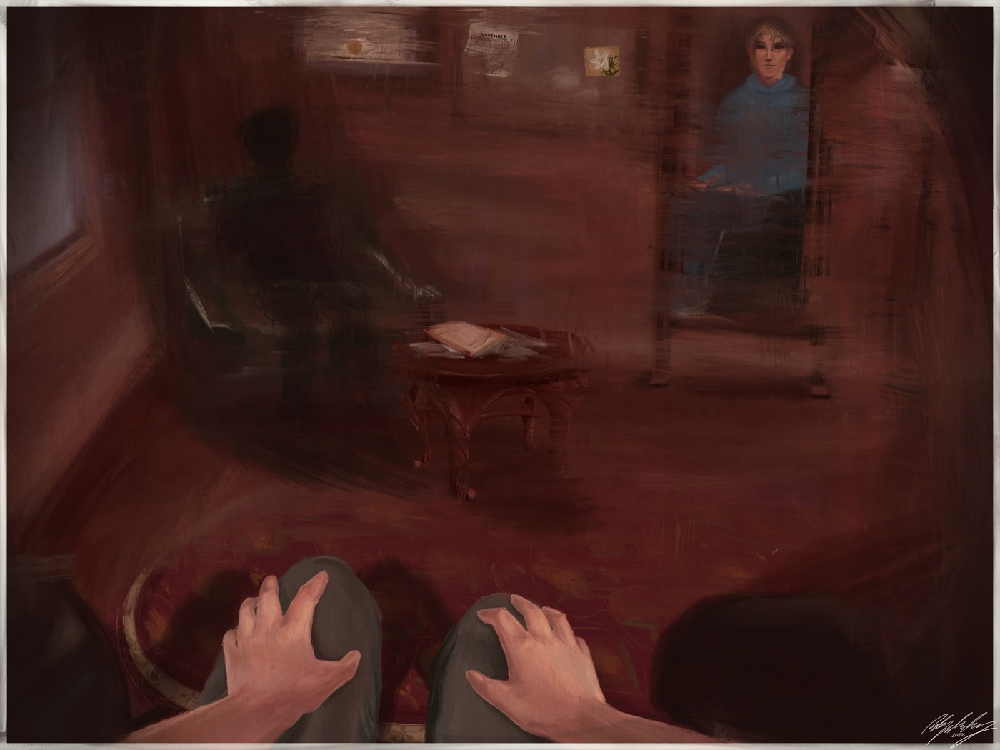
Mental ObscurityDigital PaintingCase study -
12
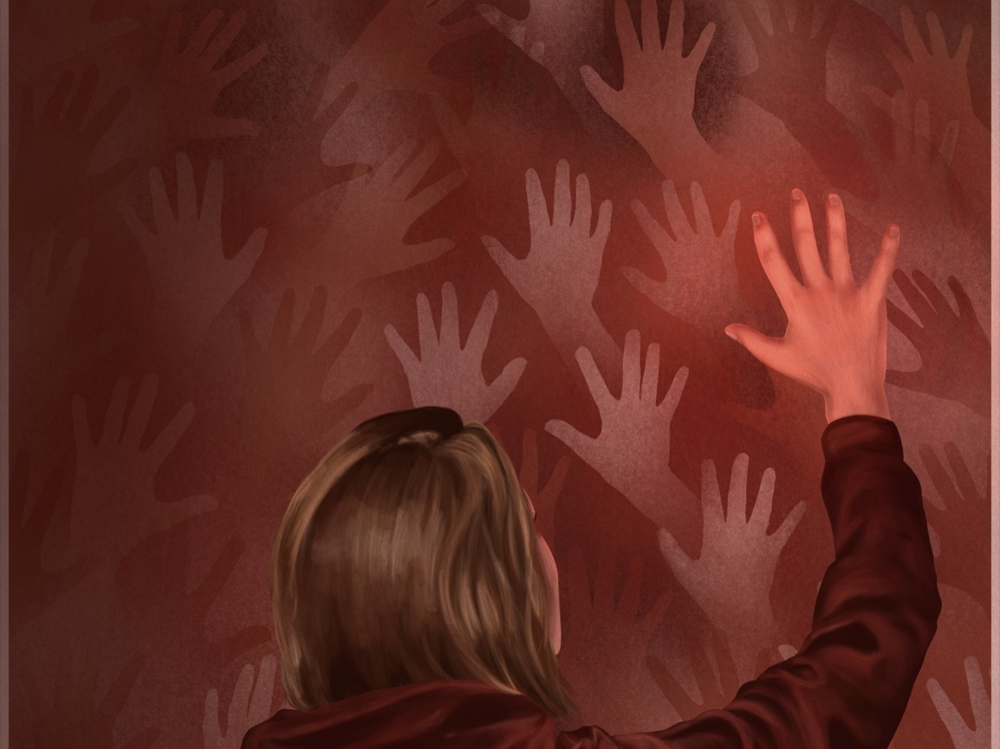
Make Our MarkDigital PaintingCase study -
13
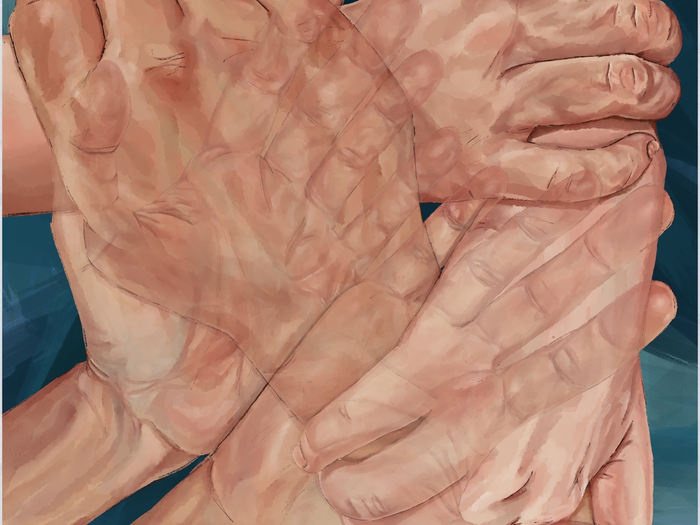
HoldDigital PaintingCase study -
14
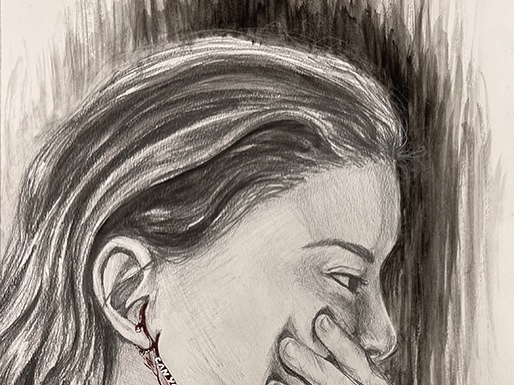
HearMixed media DrawingCase study - 15
 The LoversPastel
Drawing—
The LoversPastel
Drawing—
- 16
 Face the Light.Digital
Painting—
Face the Light.Digital
Painting—
- 17
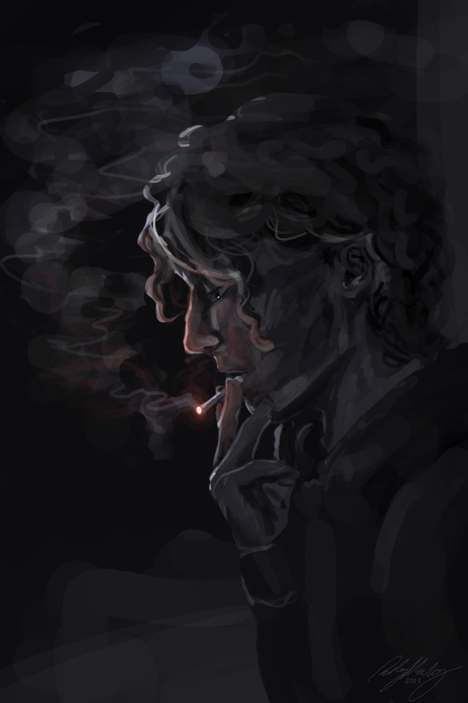
Scratch the Itch.Digital Painting— - 18
 TouchDigital
Illustration—
TouchDigital
Illustration—
- 19
 SelfCharcoal · Self-portrait
Drawing—
SelfCharcoal · Self-portrait
Drawing—
- 20
 MonoDigital · Self-portrait
Painting—
MonoDigital · Self-portrait
Painting—
- 21
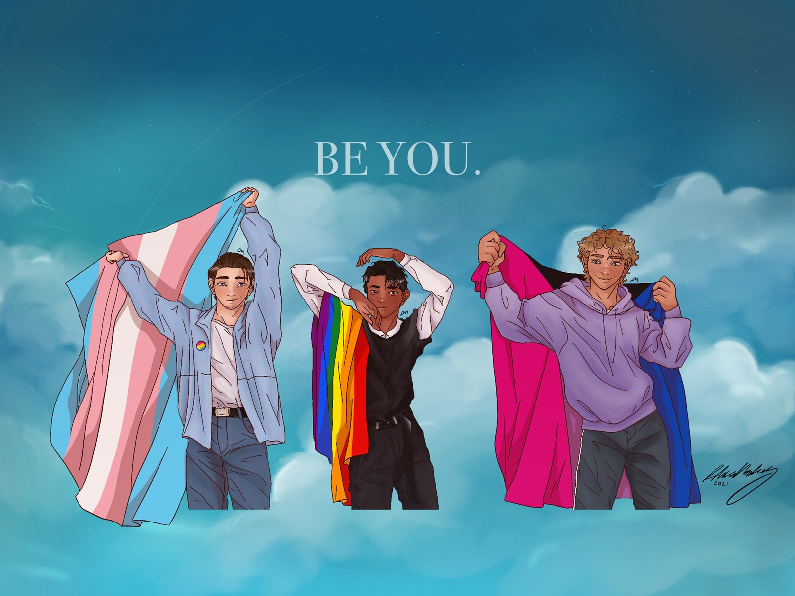
Be You.Digital · Original characters Illustration—
Writing
Two poetry collections, made as books.